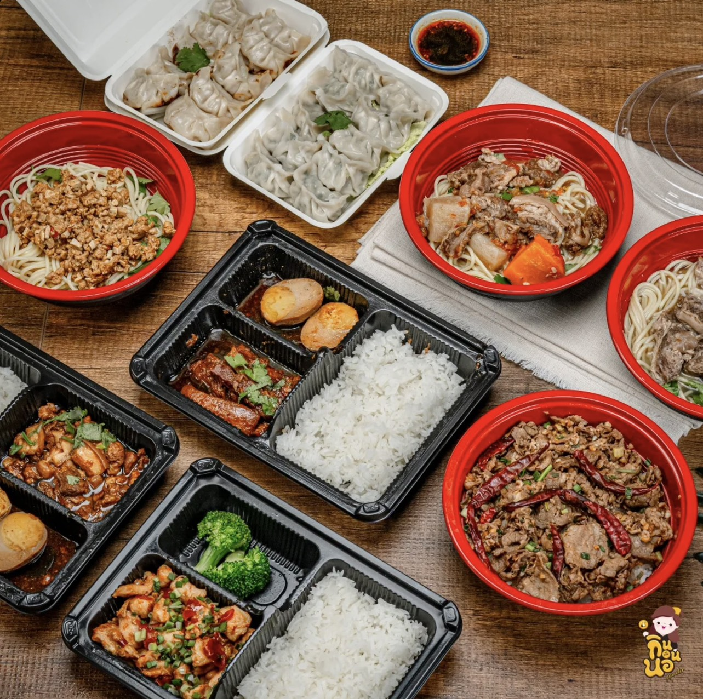
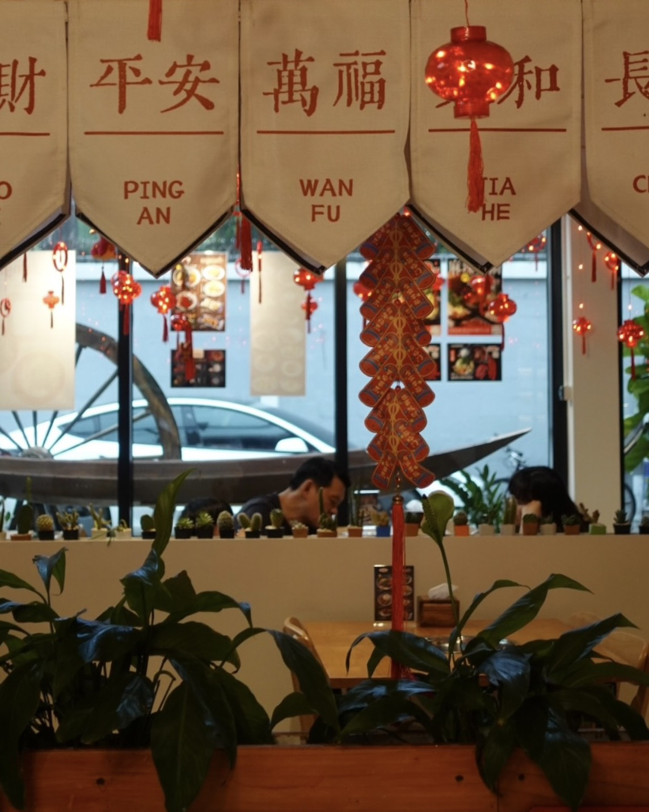
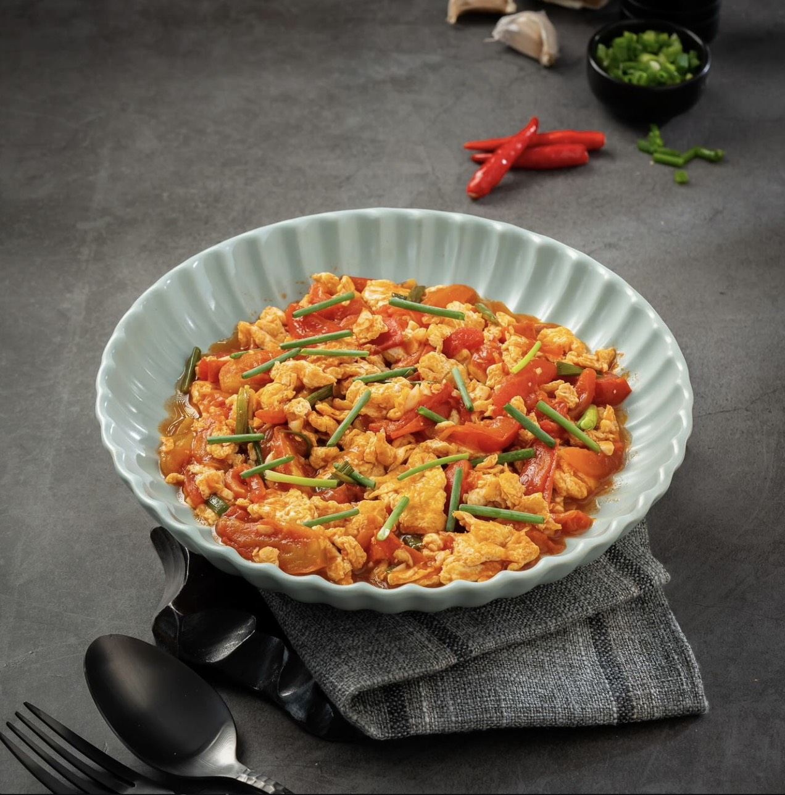
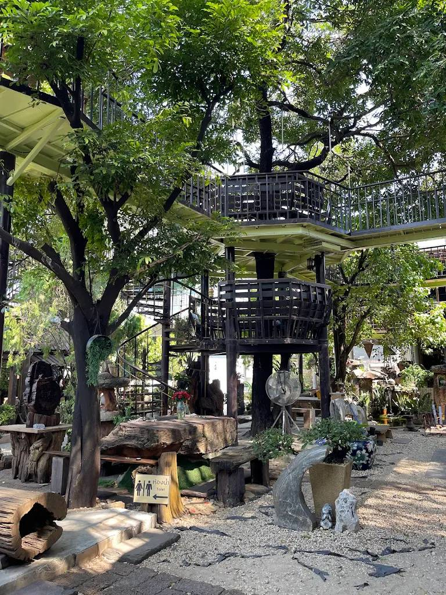

Hot pot
四川火锅 / Mala Hotpot
หม้อไฟเสฉวนรสหม่าล่า เผ็ดชา หอมเครื่องเทศ เหมาะสำหรับแชร์ทั้งโต๊ะ
Taiwanese food / Sichuan hotpot in Watthana
Authentic mala hotpot, Taiwanese comfort dishes, a garden atmosphere, and friendly Chinese-speaking service near Pridi Banomyong 26.
ภาพรวมร้าน
JUNGLE 孔雀庄园 HOT POT / TAIWANESE FOOD 台灣料理 / 四川火锅 เป็นร้านอาหารจีน-ไต้หวันในเขตวัฒนา จุดเด่นคือหม้อไฟเสฉวน น้ำซุปเห็ด เมนูไต้หวัน และบรรยากาศร้านที่มีสวนด้านหลังเหมาะกับมื้อกลุ่ม
ข้อมูลจากแพลตฟอร์มรีวิวระบุว่าเจ้าของร้านสื่อสารภาษาจีนได้ มีตัวเลือกวัตถุดิบเยอะ และมีทั้งนั่งทานที่ร้าน รับสินค้า และบริการจัดส่ง
Advance booking
ระบบนี้อ้างอิงแนวคิดร้านคิวยอดนิยมอย่างสุกี้ตี๋น้อย: ลูกค้าเลือกเวลาที่ต้องการ รับรหัสคิว และใช้รหัสนี้แจ้งพนักงานเมื่อโทรยืนยันหรือมาถึงร้าน
รีวิวจากลูกค้า
"味道挺不错的。东西蛮多。一个人500泰铢，性价比还可以。老板娘说中文，沟通起来很顺畅。环境很好。"
Customer update
"น้ำซุปเห็ดอร่อยมากค่ะ บริการดี น่ารักมากค่ะ มีของให้เลือกเยอะ จะกลับมาทานอีกนะคะ"
Google review summary
"หม้อไฟ หมาล่าดีๆ และยังมีคาเฟ่น่ารักมาก วิวดี ธรรมชาติ บรรยากาศดี"
Google review summary
รูปภาพและบรรยากาศ




ข้อมูลร้าน
85 ซอยพัฒนเวศม์ / Soi Pridi Banomyong 26, Khlong Tan Nuea, Watthana, Bangkok 10110. เปิดประมาณ 11:30-22:00 และควรโทรเช็กก่อนเดินทาง